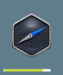
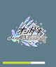

トピックス
当サイトからダウンロードしたソフトウェアの起動時に「Windows セキュリティの重要な警告」ダイアログが表示された場合の対処法
当サイトからダウンロードしたソフトウェアの起動時に「WindowsによってPCが保護されました」ダイアログが表示された場合の対処法
当サイトで公開されているコンテンツの改変や再配布、メディア掲載についてはこちらをご覧下さい。
「Windows セキュリティの重要な警告」ダイアログ
「WindowsによってPCが保護されました」ダイアログ
当サイトコンテンツのライセンスについて
更新情報
| 2021/07/06 |
JavaScriptライブラリ「AoiEngine」Ver.1.0を公開 JavaScriptライブラリ「AoiEngine」公式ウェブサイトを開設 |
|---|---|
| 2021/07/02 |
トップページを更新 ウェブアプリ「プロ生進捗管理」を更新 |
| 2021/06/26 |
ウェブアプリ「Arakawa Web Tools 句読点変換」を更新 ウェブアプリ「Arakawa Web Tools インデント変換」を更新 ウェブアプリ「Arakawa Web Tools 文字数カウント」を更新 「三菱 ミニカ H42V」のページを更新 |
| 2021/06/24 | トップページを更新、「更新履歴」ページのデザインを一部変更 |
| 2021/06/21 | 「三菱 ミニカ H42V」のページを更新 |
プロフィール
Sora Arakawa (arkw)
男性／2001年4月11日生／静岡大学 情報学部 行動情報学科 2年／愛知県岡崎市在住
公式・告知用Twitter（@arkwnet）
個人Twitter（@arkw0）
note
GitHub
Speaker Deck
SlideShare
スキル

外部制作実績
| 2021/06 | 「学情チャンプロジェクト」ウェブサイト制作 |
|---|---|
| 2021/05 | 「静岡大学ITソルーション室」ウェブサイト制作 |
| 2021/02 | 「静岡大学xRサークルはまりあ」ウェブサイト制作 |
| 2021/01 | デジタルサイネージ「ITS DigiSign 2」プログラム、グラフィック |
| 2020/11 | VRゲーム「VRSpeedRun」グラフィック |
| 2020/10 | デジタルサイネージ「ITS DigiSign」プログラム、グラフィック |
| 2020/06 | 「静岡大学 バーチャル情報学部」プログラム、グラフィック、ムービー |
| 2019/04 | 「中部新都市運輸区」ロゴデザイン、ウェブサイト制作 |
| 2018/07 | 「17NSJ参加隊 愛知第21隊『飛翔隊』」ロゴデザイン、ウェブサイト制作 |
| 2018/07 | 「オフラインGぷろ! 2018年夏号」「じーせかぺーぱー Vol.1」ロゴデザイン、組版 |
| 2017/10 | 「里山農業プロジェクト」ウェブサイト制作 |
その他、ソフトウェア開発・ウェブデザイン・グラフィックデザイン・映像編集などの実績多数
資格
- 普通自動車第一種免許（MT）
- ITパスポート
- TOEIC L&R 835点（Listening 455＋Reading 380、2020年11月 IPテスト）
- 実用英語技能検定 準2級
- 中国語検定試験 準4級
- 第4級アマチュア無線技士
所属
受賞歴
- マスコットアプリ文化祭2020 プロ生ちゃん賞 「プロ生早押しクイズ」
- マスコットアプリ文化祭2019 HSPTV!賞 「プロ生進捗管理」
- 第16回ふるさと岡崎メディアコンクール 児童生徒部門 高校の部 審査員特別賞 「TriEditor LE」
- HSPプログラムコンテスト2017 (有)テクノキット賞 「はじめての写真管理2」
- PCNこどもプロコン2016冬 PCN特別賞
- PCNこどもプロコン2016夏 jig.jp賞
- HSPプログラムコンテスト2016 学生賞
- HSPプログラムコンテスト2015 学生賞
- 全国小中学生作品コンクール パソコン部門 文部科学大臣奨励賞（2013年）
- 全国小中学生作品コンクール パソコン部門 中央出版社長賞（2011年、2012年）
イベント登壇歴
| 2021/03/12 | 技育祭2021 |
|---|---|
| 2021/03/06 | KittenLT3 |
| 2021/02/14 | 静大情報LT大会 -2021年2月- |
| 2020/11/15 | KittenLT2 |
| 2020/09/28 | 静大情報LT大会 -2020年9月- |
| 2020/09/08 | #VRSionUp!8「WebVRオンラインイベント開発」 |
| 2020/08/24 | WebXR Tech Tokyo #2 @ cluster |
| 2020/05/09 | 第4回バーチャル学生LT On YouTube LIVE |
| 2019/06/09 | 第25回 学生エンジニアLT大会 in 名古屋 |
| 2019/03/17 | 高専カンファレンス×学生LT in 名古屋 |
| 2018/11/24 | プログラミング生放送勉強会 第57回＠名古屋 |
| 2018/10/14 | プログラミングLT 2018 |
| 2017/11/23 | プログラミング生放送勉強会 第50回＠名古屋 |
| 2017/09/02 | わんくま同盟 名古屋勉強会 #42 |
| 2016/11/26 | プログラミング生放送勉強会 第45回＠名古屋 |
| 2015/12/12 | プログラミング生放送勉強会 第38回＠名古屋 |
使用機材
| メインPC | HP ENVY 15 X360（AMD Ryzen 5 2500U、16GB RAM、Windows 10） |
|---|---|
| サブPC | mouse C1（Intel Celeron N4100、8GB RAM、Windows 10） ASUS VivoBook E203NA（Intel Celeron N3350、4GB RAM、Ubuntu 20.04） |
| スマートフォン | geanee ADP-503G（MediaTek MT6737M、1GB RAM、Android 10 Go Edition） HUAWEI GR5（Snapdragon 615 MSM8939、2GB RAM、Android 5.1） |
| タブレット端末 | BLUEDOT BNT-71W（MediaTek MT8163V、1GB RAM、Android 5.1） |
| デジタルカメラ | Canon PowerShot SX620HS |
| プリンタ | Canon iP2700（インクジェット） EPSON EP-706A（インクジェット複合機） KKmoon POS-5890K（58mmレシート） |
| ICレコーダー | SANYO DIPLY ICR-PS004M |
| 自動車 | 三菱 ミニカ H42V |
製品情報
WinSmartWatch
スマートウォッチをモチーフとしたデスクトップアクセサリ
コピペレコーダー
クリップボードのコピー履歴を保持し、再利用できるソフトウェア
はじめての写真管理S
視覚的かつシンプルに大量の写真を管理できるソフトウェア
ウェブ撃
オープンソースの次世代型ウェブサイト制作ツール
Nagaharu
シンプルに使えるオープンソースの文書作成ソフトウェア
タイピングファクトリー
英単語や地名など短い文を連続して入力するタイピングゲーム
TriEditor LE
学習用途に特化したHTML/CSS用のテキストエディタ
開発終了 － Windows 8.1/10
はじめての写真管理2はじめての写真管理 Ver.1.1.2 インストーラー版
はじめての写真管理 Ver.1.1.2 ポータブル版
はじめてのデジタル日記 Ver.1.0
かんたん住所録 Ver.1.0.1 修正版
E-Page Editor Ver.1.0.1
おこしもん Ver.1.0.1
シンプル進捗管理 Ver.1.0
直書きランチャー Ver.1.0.1
姿勢チェッカー for Windows Ver.1.0
プロ生早押しクイズ
プロ生ちゃんや情報処理研究会のキャラクターと早押しクイズで対決！
プロ生進捗管理
その日に出した進捗を気軽に記録できるウェブサービス
ドカベンメーカー
「ドカベン」のロゴ風画像を作成できるウェブアプリ
教えて！ハカセ ジェネレータ
「教えて！○○ハカセ」の画像を作成できるウェブアプリ
支離滅裂な思考・発言 ジェネレータ
「支離滅裂な思考・発言」の画像を作成できるウェブアプリ
近鉄車番検索
近鉄車両の車両番号、両数、電算記号などを検索できるウェブアプリ
名鉄車番検索
名鉄車両の車両番号、両数、電算略号などを検索できるウェブアプリ
Article Checker
文章を検査し、「日本語の使い方」や「読みやすさ」をチェックするツール
マイ元号メーカー
2019年エイプリルフール企画
Arakawa Web Tools
句読点変換インデント変換
文字数カウント
コンテンツ
Arakawa No-SSL
Arakawa 旧トップページ
Arakawa Blog
背景画像アーカイブ
Team Axella 跡地
リンク集
Pass-case
Optinum Surviter
うおたか奮闘記